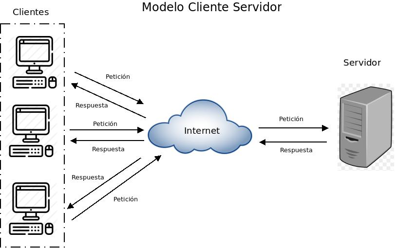

Resumen
Es una arquitectura de procesamientos cooperativodonde uno de los componentes pide servicios a otro. Es una relaciónentre procesos corriendo en máquinas separadasPuede ser una computadora personal o una televisión inteligente queposea la capacidad de entender datos digitales. Los elementosprincipales de la arquitectura cliente servidor son justamente elelemento llamado cliente y el otro elemento llamado servidor.El servidor (S) es un proveedor de servicios.El cliente (C) es un consumidor de servicios.Los dos interactúan por un mecanismo de envío de mensajes: elpedido de un proceso y una respuest
Introduccion
La tecnología Cliente/Servidor es el procesamiento cooperativo de la información por medio de un conjunto de procesadores, en el cual múltiples clientes, distribuidos geográficamente, solicitan requerimientos a uno o más servidores centrales.
Desde el punto de vista funcional, se puede definir la computación Cliente/Servidor como una arquitectura distribuida que permite a los usuarios finales obtener acceso a la información de forma transparente aún en entornos multiplataforma. Se trata pues, de la arquitectura más extendida en la realización de Sistemas Distribuidos.
Arquitectura Cliente servidor
En esta arquitectura la computadora de cada uno de los usuarios, llamada cliente, produce una demanda de información a cualquiera de las computadoras que proporcionan información, conocidas como servidores estos últimos responden a la demanda del cliente que la produjo.
Los clientes y los servidores pueden estar conectados a una red local o una red amplia, como la que se puede implementar en una empresa o a una red mundial como lo es la Internet.
Bajo este modelo cada usuario tiene la libertad de obtener la información que requiera en un momento dado proveniente de una o varias fuentes locales o distantes y de procesarla como según le convenga. Los distintos servidores también pueden intercambiar información dentro de esta arquitectura.
Importancia
La arquitectura cliente servidor tiene dos partes claramente diferenciadas, por un lado la parte del servidor y por otro la parte de cliente o grupo de clientes donde lo habitual es que un servidor sea una máquina bastante potente con un hardware y software específico que actúa de depósito de datos y funcione como un sistema gestor de base de datos o aplicaciones.
En esta arquitectura el cliente suele ser estaciones de trabajo que solicitan varios servicios al servidor, mientras que un servidor es una máquina que actúa como depósito de datos y funciona como un sistema gestor de base de datos, este se encarga de dar la respuesta demandada por el cliente.

Componentes
Red
es un conjunto de clientes, servidores y base de datos unidos de una manera física o no física en el que existen protocolos de transmisión de información establecidos.
Cliente
hace referencia a un demandante de servicios, este cliente puede ser un ordenador como también una aplicación de informática, la cual requiere información proveniente de la red para funcionar.
Servidor
hace referencia a un proveedor de servicios, este servidor a su vez puede ser un ordenador o una aplicación informática la cual envía información a los demás agentes de la red.
Protocolo
es un conjunto de normas o reglas y pasos establecidos de manera clara y concreta sobre el flujo de información en una red estructurada.
Servicios
es un conjunto de información que busca responder las necesidades de un cliente, donde esta información pueden ser mail, música, mensajes simples entre software, videos, etc.
Base de datos
Son bancos de información ordenada, categorizada y clasificada que forman parte de la red, que son sitios de almacenaje para la utilización de los servidores y también directamente de los clientes.